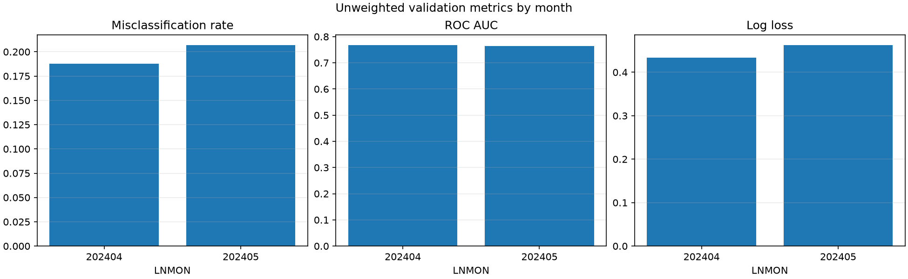
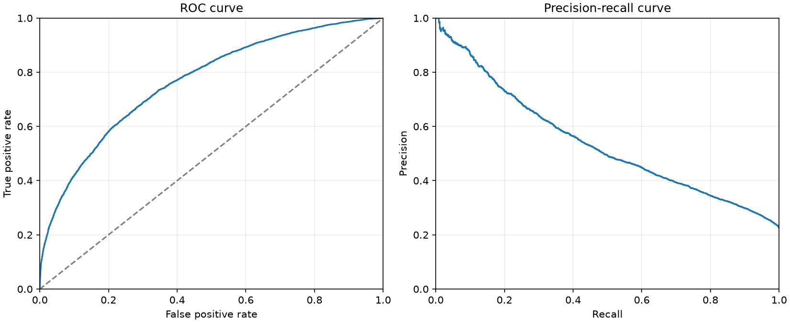
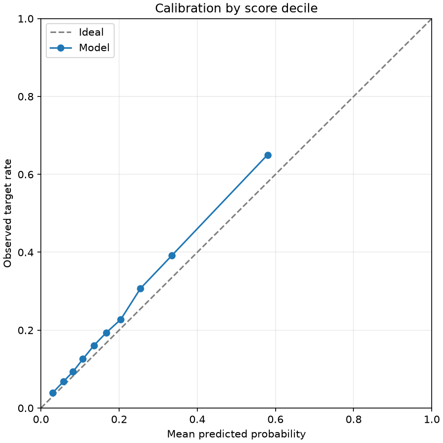
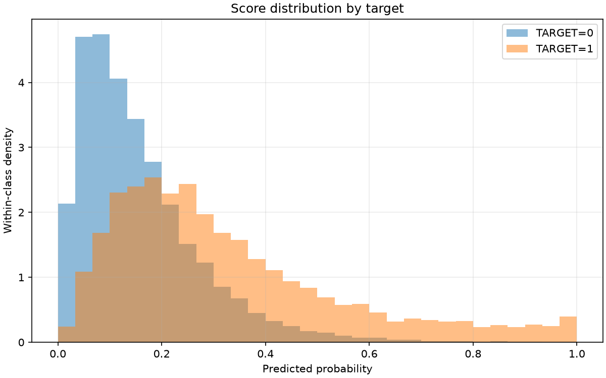
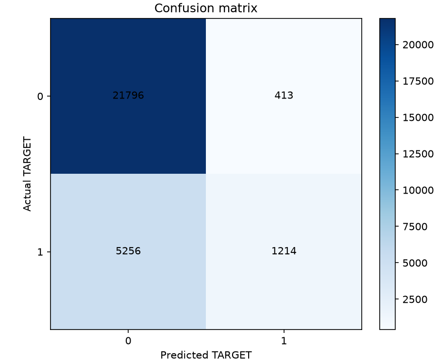

Training curve

Final validation misclassification rate at probability > 0.5: 0.197671
The training curve uses the model's original validation protocol. Scores describe undersampled data, not an independent test set.
| scope | month | rows | target_1_rows | target_1_rate | misclassification_rate | roc_auc | average_precision | log_loss | brier_score |
|---|---|---|---|---|---|---|---|---|---|
| overall_unweighted | all | 28679 | 6470 | 0.22560 | 0.19767 | 0.76607 | 0.53865 | 0.44845 | 0.14316 |
| monthly_unweighted | 202404 | 13966 | 2989 | 0.21402 | 0.18788 | 0.76794 | 0.52767 | 0.43349 | 0.13744 |
| monthly_unweighted | 202405 | 14713 | 3481 | 0.23659 | 0.20696 | 0.76423 | 0.54894 | 0.46265 | 0.14860 |
| evaluation | protocol | months | month_weighted | misclassification_rate |
|---|---|---|---|---|
| training_protocol | v2 | 202403,202404,202405 | True | 0.18576 |
| selected_protocol | v1 | 202404,202405 | False | 0.19767 |
| actual | predicted | rows | weight_sum |
|---|---|---|---|
| 0 | 0 | 21796 | 21796.00000 |
| 0 | 1 | 413 | 413.00000 |
| 1 | 0 | 5256 | 5256.00000 |
| 1 | 1 | 1214 | 1214.00000 |
| decile | rows | weight_sum | mean_probability | observed_target_rate |
|---|---|---|---|---|
| 1 | 2868 | 2868.00000 | 0.02994 | 0.03905 |
| 2 | 2868 | 2868.00000 | 0.05753 | 0.06799 |
| 3 | 2868 | 2868.00000 | 0.08209 | 0.09344 |
| 4 | 2868 | 2868.00000 | 0.10745 | 0.12587 |
| 5 | 2868 | 2868.00000 | 0.13529 | 0.16039 |
| 6 | 2868 | 2868.00000 | 0.16673 | 0.19317 |
| 7 | 2868 | 2868.00000 | 0.20430 | 0.22768 |
| 8 | 2868 | 2868.00000 | 0.25470 | 0.30718 |
| 9 | 2868 | 2868.00000 | 0.33449 | 0.39121 |
| 10 | 2867 | 2867.00000 | 0.57971 | 0.65016 |
| threshold | weighted_true_positive | weighted_false_positive | weighted_true_negative | weighted_false_negative | misclassification_rate | precision | recall | specificity |
|---|---|---|---|---|---|---|---|---|
| 0.10000 | 5821.00000 | 13637.00000 | 8572.00000 | 649.00000 | 0.49813 | 0.29916 | 0.89969 | 0.38597 |
| 0.20000 | 4258.00000 | 6030.00000 | 16179.00000 | 2212.00000 | 0.28739 | 0.41388 | 0.65811 | 0.72849 |
| 0.30000 | 2815.00000 | 2436.00000 | 19773.00000 | 3655.00000 | 0.21239 | 0.53609 | 0.43509 | 0.89031 |
| 0.40000 | 1837.00000 | 966.00000 | 21243.00000 | 4633.00000 | 0.19523 | 0.65537 | 0.28393 | 0.95650 |
| 0.50000 | 1214.00000 | 413.00000 | 21796.00000 | 5256.00000 | 0.19767 | 0.74616 | 0.18764 | 0.98140 |
| 0.60000 | 814.00000 | 177.00000 | 22032.00000 | 5656.00000 | 0.20339 | 0.82139 | 0.12581 | 0.99203 |
| 0.70000 | 569.00000 | 70.00000 | 22139.00000 | 5901.00000 | 0.20820 | 0.89045 | 0.08794 | 0.99685 |
| 0.80000 | 357.00000 | 35.00000 | 22174.00000 | 6113.00000 | 0.21437 | 0.91071 | 0.05518 | 0.99842 |
| 0.90000 | 198.00000 | 12.00000 | 22197.00000 | 6272.00000 | 0.21912 | 0.94286 | 0.03060 | 0.99946 |




